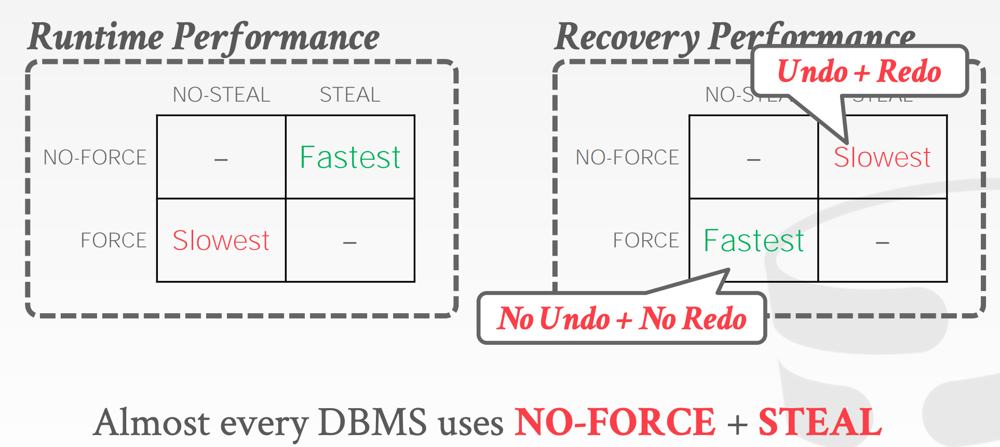

日志
动机：内存中未刷新到磁盘上的数据如何处理？
故障恢复：故障恢复算法是保证数据库一致性，事务原子性和持久性的技术。恢复算法有两个部分：
- 正常事务处理过程中的动作来保证 DBMS 可以在故障中恢复。
- 故障后的动作来恢复数据库到一个可以保证原子性、一致性和持久性的状态。
存储类别
- 易失性存储：数据断电后不会保存，DRAM，SRAM。
- 非易失性存储：数据在断电后可以爆粗，HDD，SDD。
故障类别
- 事务故障
- 系统故障
- 存储故障
事务故障
- 逻辑故障：由于一些内部错误（例如，完整性约束违规），事务不能完成。
- 内部状态错误：由于一个写错误的条件（例如，死锁）DBMS 必须终止一个活动的事务。
系统故障
- 软件故障：DBMS 实现（例如未处理的除零异常）。
- 硬件故障：计算机主机宕机（电源被拔）。
- 故障停止假设：驾驶系统崩溃不会破坏易失性存储内容。
存储媒介故障
- 不可修复的硬件故障 - 头部崩溃或者类似的磁盘故障会破坏全部或者部分非易失性存储。 - 假设毁坏是可以检测的（例如，磁盘控制器使用校验和来检测故障）。
没有系统可以从这种故障中恢复，数据库必须从归档的版本来恢复数据。
观察结论
数据库系统的主要的存储位置在非易失性存储上，但是比易失性存储慢得多。
使用内存可以更快访问：
- 首先将目标记录复制到内存中。
- 在内存中执行写入。
- 将脏记录写回磁盘。
DBMS 需要保证：
- 一旦 DBMS 已经提交，任何事务的变更都是持久的。
- 如果事务中止，没有事务的变更是持久的。
UNDO vs. REDO
Undo: 移除未完成或者中止事务的影响的过程。
Redo: 重新发起已经提交事务对持久性的影响的过程。
DBMS 如何支持这个功能依赖其如何管理缓存池。
WAL
在变更发生之前，记录数据库的变更到一个日志文件中。
- 假设日志在稳定存储中
- 日志包含足够的信息来执行必要的 undo 和 redo 动作来恢复数据库。
WAL 协议
DBMS 将所有事务的日志记录分级到易失性存储中（通常由缓冲池支持）。
在页面本身被重写到非易失性存储器之前，所有与更新页面有关的日志记录都被写入非易失性存储器。
一个事务不能被认为是提交的，直到所有的日志被写入到稳定存储。
在每个事务的日志开始写一个
当一个事务结束时，DBMS 将会：
- 写一个
记录到日志中 - 在返回确认消息给应用之前，保证所有日志记录被写到磁盘。
每个日志条目包含单个对象变更的信息：
- 事务 id
- 对象 id
- 写之前的值（UNDO）
- 写之后的值（REDO）
WAL 实现
什么时候 DBMS 将会写日志条目到磁盘？
- 事务提交时。
- 可以使用组提交来批量化多个日志同时刷新来分摊开销。
什么时候 DBMS 写脏页到磁盘？
WAL 延迟更新
如果我们避免 DBMS 写脏页到磁盘，直到事务提交，然后我们不需要保存原始的值。
如果事务的变更多于可用内存的数量，这就无法工作了。
如果在日志中不包含原始的值，DBMS 不能撤销中止事务的变更。

日志模式
物理日志
记录特定位置的变更。
逻辑日志
记录事务执行的高级操作。
不需要限制到单个页面。
在日志记录中，逻辑日志比物理日志需要的数据更少。
如果有并发事务，逻辑日志很难进行恢复。
- 很难决定数据库的哪个部分在故障之前被修改。
- 需要更长的时间来恢复，因为必须重头重新执行每个事务。
检查点
WAL 会一直增长。
在故障后，DBMS 必须重放全部的日志，这需要很长的时间。
DBMS 周期性地执行检查点，在这个点的所有缓存被写出到磁盘。
挑战
我们必须在检查点时停止所有txns以确保一致的快照。
扫描日志找到未提交的事务需要很长时间。
多长时间 DBMS 执行一次检查点并不是很明显。
检查点太频繁导致运行性能降级。系统花费更多时间刷新缓存。
但是等待时间太长也会有问题：
- 检查点会更大更慢。
- 恢复时间变得更长。